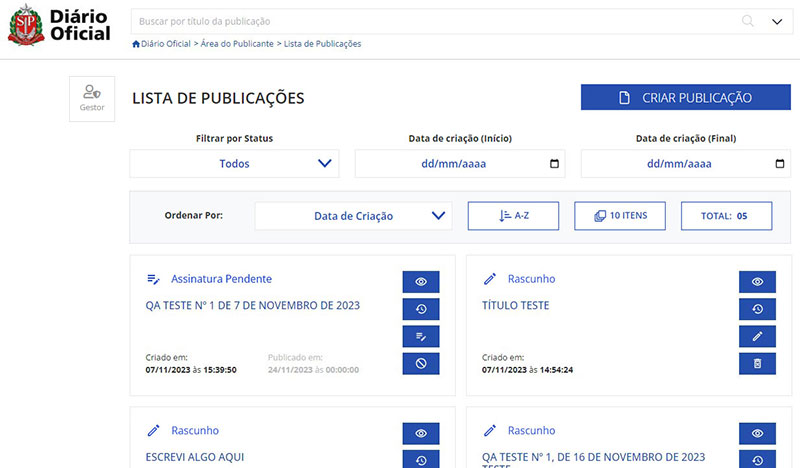
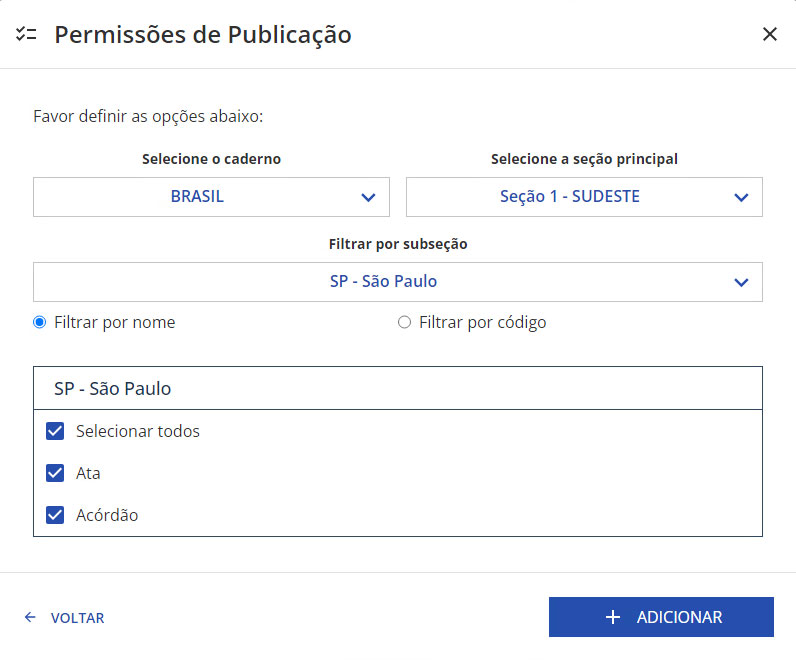
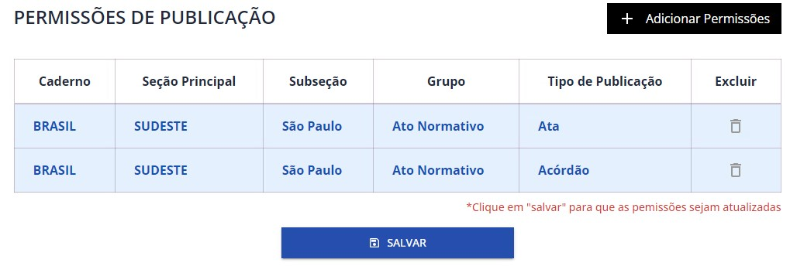
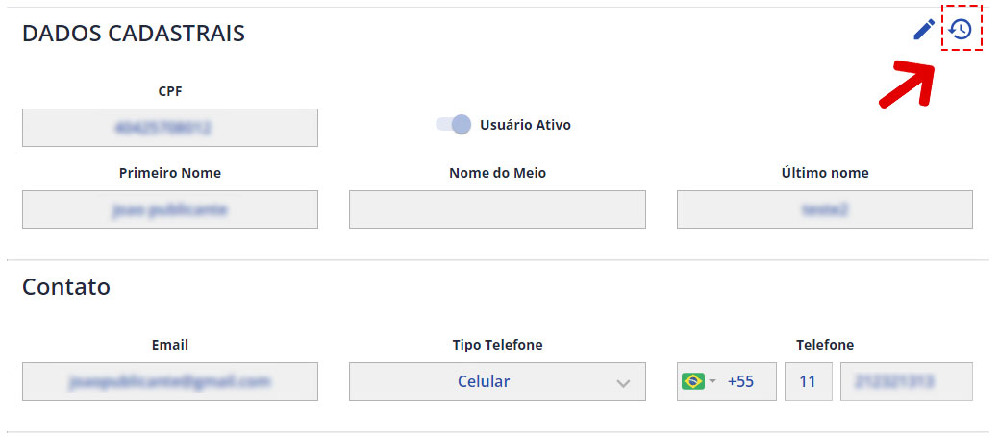
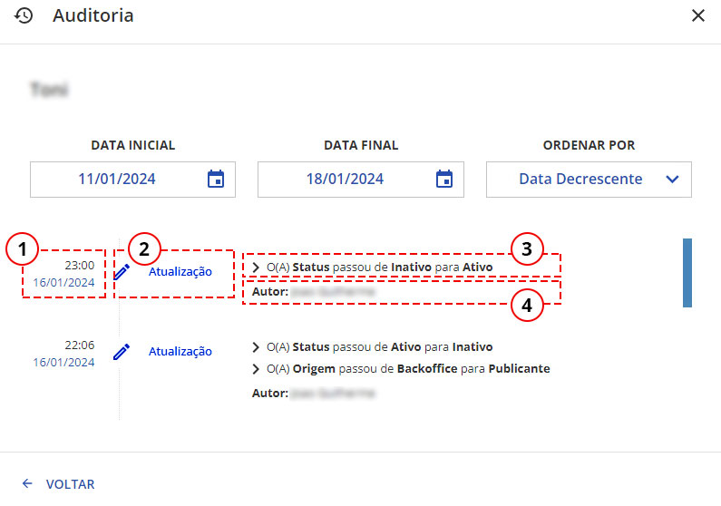

Tudo que você precisa saber sobre o Processo de criação e manutenção das publicações no Diário Oficial
Aqui veremos o que será necessário para poder acessar seu perfil na área do publicante.

Na Tela inicial do Portal DOE.SP.GOV.BR, clique em "Publicar no Diário". Você será redirecionado à tela de autenticação da Área do Publicante, ilustrada abaixo:

Caso possua uma conta GOV.BR, basta clicar em "Ir ao Login" para acessar à Área do Publicante.
Ao selecionar o botão de "Criar Conta GOV.BR", você será redirecionado à tela de Cadastro do GOV.BR

Para quem for Criar uma conta GOV.BR, clique em "Iniciar"
Em seguida clique em "Concordo", referente aos Termos de Uso e Privacidade. Autorize a utilização dos seus dados pessoais e siga com as instruções de preenchimento.
Após criar sua conta, sempre que autenticar através do Portal GOV.BR, informe com seu CPF e Senha:

Entre com o seu CPF...

E digite sua senha...
Com a autenticação bem-sucedida, o usuário será redirecionado "Listagem de Publicações". Aqui, será possível localizar e criar uma publicação, bem como acompanhar o seu andamento.
Ao selecionar o botão "Gestor", localizado no canto superior esquerdo da página. Você poderá ver o nome do atual usuário Logoado, assim com seu nível de confiabilidade e acessos a área de Gestão de Publicantes.
Dependendo do nível de confiabilidade atribuído ao seu perfil, este lhe dará maior abrangência na utilização da plataforma de publicação. São eles:
Usuário com nível de confiabilidade Bronze poderão somente criar editar publicações.
Para poder publicar na nova Área do Publicante, o nível de confiabilidade mínimo deverá ser Prata, além de poder assinar digitalmente suas publicações.
Área destinada unicamente aos perfis de Gestor, responsável pela inclusão e manutenção dos usuários que poderão realizar publicações no Diário Oficial.
Para sair do portal de Publicação do DOE, basta clicar em "Sair"
Abaixo, serão detalhadas as funções da barra de busca, situada ao topo de todas as telas da Área de Gestão de Publicantes.

Escreva o nome com/sem sobrenome para localizar o usuário cadastrado.
Ao configurar a busca, os seguintes filtros estarão disponíveis:

Este recurso permite ver o nome da página atual assim como exibir os atalhos das páginas anteriores.
A listagem de usuários é o local onde será possível consultar todos os perfis cadastrados no sistema, assim controlar os tipos de permissões de suas publicações.
É possível exibir somente os usuários que estejam num determinado status, assim como especificar um intervalo de tempo para todos os usuários criados neste período.
É possível reorganizar todos usuários para que o resultado desejado seja obtido com facilidade. É possível organizar por tipos de data e ordena-las como Crescente ou Decrescente. E por fim, será possível definir quantos resultados serão exibidos por página.
Aqui é possível ver os dados adicionados à pesquisa, além de poder remove-los com o botão "Limpar Filtros", trazendo todos os usuários cadastrados novamente.
A lista apresenta os resultados em forma de cards (cartões), contendo informações gerais de um usuário específico.
Usuário com permissão de utilização do Sistema
Usuário sem permissão de utilização do sistema.
 Botão de exibição do usuário cadastrado. Serve para
acessar seus dados pessoais e as permissões atribuídas a ele para realizar publicações.
Botão de exibição do usuário cadastrado. Serve para
acessar seus dados pessoais e as permissões atribuídas a ele para realizar publicações.
 Botão para editar
os dados pessoais do usuário, contatos e permissões de publicação.
Botão para editar
os dados pessoais do usuário, contatos e permissões de publicação.
 Botão de auditoria
de um cadastro de usuário, exibe a trilha de auditoria contendo todas as
alterações realizadas em seus dados e permissionamento.
Botão de auditoria
de um cadastro de usuário, exibe a trilha de auditoria contendo todas as
alterações realizadas em seus dados e permissionamento.
Botão de acesso a tela de cadastro de usuário.
O objetivo desta seção é mostrar os dados necessários para a inclusão de um novo usuário ao sistema.
Ao clicar no botão "Adicionar Permissões" o gestor definirá quais Tipos de Atos que este usuário terá permissão para criar publicações.
 Mais DetalhesApós selecionar os tipos de atos, clique no botão "Adicionar". Assim o modal de permissões irá fechar e a lista de permissões estará disponível na tela de cadastro para constatação.
Ao clicar no botão "Salvar" o sistema irá registrar este usuário no banco de dados do DO com publicante, além dos Tipos de Atos que este usuário terá permissão para atuar na criação de publicações.
Aqui o gestor irá definir os tipos de Atos que o usuário poderá selecionar para identificar suas publicações no Portal do DO.
Define qual caderno será disponibilizado para publicação.
Corresponde à qual seção principal, do caderno selecionado anteriormente, será disponibilizada para publicação.
Corresponde à qual subseção, da sessão principal selecionado anteriormente, será disponibilizada para publicação.
Caso o gestor tenha maior facilidade em localizar uma subseção pelo seu código, este poderá realizado marcando o item "filtrar por código" e digitando no campo correspondente.
Corresponde à classificação ou o tipo de documento que será transmitido, depende da seção principal e subseção selecionadas anteriormente.
Marque todos os atos em que este usuário poderá realizar suas publicações.
Ao editar as permissões de publicação, nos será apresentado uma lista.
Importante: Tanto na inclusão com na exclusão, a listagem de permissões de publicação somente será atualizada após o acionamento do botão "Salvar". Linhas indicadas como "RESTRITRAS" não poderão ser excluídas, pois se referem aos tipos de Atos controladas pelos administradores do sistema para este usuário.
A auditoria de usuários tem o objetivo de registrar todas as ações, sejam sistêmicas ou humanas, ao longo do tempo, oferecendo transparência e confiabilidade nos fluxos de cadastro e edição dos usuários.
Dessa forma, o gestor não fica às cegas sobre o que está ocorrendo com seus registros.
A auditoria poderá ser acessada pela listagem de usuários, através do botão de contexto exibido em cada resultado.
Ou alternativamente, quando visualizar os detalhes de uma publicação específica, através do botão disponível no topo direito do editor.
O seguinte modal será apresentado:
Existem quatro informações importantes que podem ser destacadas:
Esta lista de alterações pode ser extensa, por isso a tela de auditoria possui um controle na parte superior da janela que ajuda na exibição das alterações, determinando um intervalo de tempo, além de ordená-las por data crescente ou decrescente.
Para o envio de uma publicação, é necessário que sua transmissão seja assinada digitalmente.
A assinatura digital garante a autenticidade das informações enviadas num dado período de tempo, conferindo valor legal para a publicação.

Para assinar uma publicação, o usuário deverá antes finalizar seu trabalho no editor de publicações e clicar no botão de Assinar, abaixo do editor.
A publicação terá seu status alterados para “Assinatura Pendente” e o usuário será redirecionado para a tela de assinatura.
Observação: Usuário com nível de confiabilidade Nível Bronze, poderá editar e enviar a publicação para assinatura, e ao ficar com status " Assinatura Pendente ", caso tente prosseguir, a ferramenta o impede, avisando que o usuário não possui permissão para assinar a publicação.

Insira o código enviado por SMS para seguir com a Assinatura.

Conforme ilustrado, será exibida uma prévia da publicação (painel superior) após ser disponibilizada na área do cidadão, e os dados do certificado digital emitidos pelo ITI.
Não será mais necessária a utilização de certificado digital físico com token (A3) ou exportado na máquina (A1), pois o certificado estará atrelado à conta GOV.BR

No painel inferior, são exibidos os dados do usuário que irá assinar o conteúdo transmitido. Vale notar que o documento privado será parcialmente omitido por razões de segurança e privacidade.
Para prosseguir, será necessário dar o aceite das informações apresentadas, para de fato assinar e transmitir a publicação.
Com a assinatura realizada e sua publicação concluída,
será possível conferir estes dados na tela de
visualização da publicação.

É possível reverter o passo da assinatura, caso novas informações precisem ser adicionadas, “Voltar para o Rascunho”. Neste caso, a publicação muda de estado para “Rascunho” e ela poderá ser atualizada através do editor.
Caso o usuário precise assinar posteriormente sua publicação, ele poderá retornar para a listagem
O botão de cancelamento estará disponível quando a publicação estiver com status de "Assinatura Pendente", localizado no canto superior direito, com as demais funcionalidades complementares ou no card da publicação.
Mais DetalhesAo clicar no botão de Assinar, é aplicada a assinatura. No caso da operação ser bem sucedida, o usuário é redirecionado para a tela de confirmação do envio de sua publicação.

O usuário poderá visualizar o resultado do envio e retornar para a listagem de publicações.
Será exibido os seguintes dados:
O processo de envio da publicação foi finalizado, com status " Publicação Pendente", aguardando a chegada da sua data de publicação.
 O botão de cancelamento também estará disponível quando a publicação estiver com status de
"Publicação Pendente", localizado no card da Listagem de Publicações .
O botão de cancelamento também estará disponível quando a publicação estiver com status de
"Publicação Pendente", localizado no card da Listagem de Publicações .
Seja pela inclusão de expressões proibidas ou adiamentos, uma publicação poderá ser cancelada por inúmeros motivos. Abaixo, segue processo para cancelamento:
O botão de "Cancelamento" só estará disponível para as publicações com status de:
Ao clicar, irá parecer um modal com a seguinte informação:
Ao solicitar o cancelamento, será apresentado uma lista de possíveis motivos para justificar a ação.
Selecione um motivo e clique em "Sim", caso realmente precise cancelar a publicação, ou desista desta ação, retornando a tela anterior, através do link "Voltar"